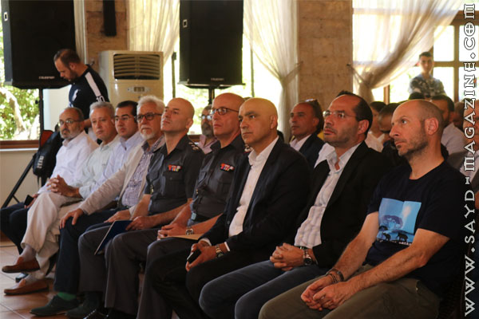
أقامت جمعية "حماية الطبيعة في لبنان-SPNL" و"مركز الشرق الأوسط للصيد المستدام-MESHC"، بالتعاون مع شركائهم المحليين والدوليين، حفلًا في مقر MESHC- الويست بقاع كونتري كلوب الأحد 8 أيلول 2019، من ضمن نشاطهما المرتبط بالحملة الدولية flight for survival لحماية طائر اللقلق، على خط هجرة الطيور فوق لبنان الذي يعتبر ثاني أهم ممرّ للهجرة في العالم. بعد الكلمة الترحيبية من قبل مدير عام الويست بقاع كونتري السيد جان ميني التي اشار فيها الى "وجود الناس الصح في المكان الصح" للحديث عن ممر هجرة الطيور وحمايتها. افتتح الحفل رئيس مركز الشرق الأوسط للصيد المستدام ومدير ملف الصيد المسؤول في جمعية حماية الطبيعة أدونيس الخطيب، وعرض فيديو يختصر قصة الصيد المستدام بالصورة.. وقدَّم لكلمات وزير البيئة فادي جريصاتي الذي أكد على ضرورة التعاون بين الصيادين والوزارة وأشار الى التسهيلات التي قدمتها الوزارة مؤخرا فيما يتعلق برخصة الصيد من إلغاء بعض الاوراق كالسجل العدلي والورقة الطبية وتخفيض ثمن بوليصة التأمين من 50 دولارالى 25 يمكن شراءها online .. و من جهته قال وزير الدولة لشؤون التجارة الخارجية حسن مراد انه لن يقبل ان تبقى منطقة غزة منطقة سوداء على الخريطة البيئة بل علينا العمل اكثر لحماية الطيور المهاجرة التي تمر فوقها، واشاد ببعض الصيادين في منطقته الذين توقفوا كليا عن صيد اللقلق،وابدى استعداده للتعاون وتسخير كل الامكانيات لصالح التوعية بدءا مؤسستاته التربوية . وفي كلمته اشار رئيس شعبة العلاقات العامة في قوى الأمن الداخلي العقيد جوزيف مسلّم الى اهمية التواصل مع قوى الامن التي لن توفر جهدا للتعاون ومكافحة الصيد الجائر ، وأوضح ان التوعية هي الاساس لخلق مجتمع افضل، ونقل تحيات مدير عام قوى الامن الداخلي اللواء عماد عثمان الى المشاركين في الحفل. ومن جهته اوضح ممثل وزارة الداخلية في المجلس الأعلى للصيد البري العقيد جهاد صليبا، مهتمه ولفت الى الاجراءات الذي اتخذها لمكافحة الصيد الجائر وكيف حققت نتيجة تلو الاخرى وهي الان في تصاعد لتحقيق الهدف المنشود، واكد ان لا مناطق ولا اشخاص خارج القانون، ونقل خبر طازج عن توقيف مجموعة من الشبان تقوم بالصيد على االشباك وصيد الليل في منطقة البقاع الشمالي. وعرضت الفنانة التشكلية منى صايغ لوحة "اللقلق والأمومة" و أعلنت عن تقديمها للمساعدة الخاصة لفخامة رئيس الجمهورية رئيسة الهيئة العليا لشؤون المراة اللبنانية السيدة كلودين عون، وختم الشاعر حسين شعيب بقصيدة رائعة عن هجرة الطيور وعن الصياد المسؤول. وقدَّم المستشار الدولي للمجلس العالمي للطيور/ مدير عام SPNL السيد أسعد سرحال شهادات شكر وتقدير للذين ساهموا بإنجاح النشاط والحفل... ومن جهته وخلال كلمته في تقديم وزير البيئة طلب الخطيب من معاليه ان تستعمل اموال رخص الصيد لصالح الصيد والصياديين من خلال انشاء مناطق صيد مسؤول يمكن من خلالها اكثار الطرائد وتأمين فرص عمل للمجتمع المحلي ومراقبة التجاوزات .. حضر الحفل رئيس اتحاد بلديات البحيرة السيد يحي ضاهر الى جانب مجموعة من رؤساء البلديات، ورئيس جمعية حماية الطيور في لبنان / مدير قسم الصيد والتصوير البري فؤاد عيتاني، ومجموعات صيادين من كافة المناطق اللبنانية وفعاليات من منطقة البقاع ابرزهم رئيس مجموعة " أساطير الصيد " ظافر النخلاوي، ورئيس مجموعة " بيت الصياد " أحمد بدر حسون، ورئيس مجموعة " تريغير تيم" خالد بو يونس . واعضاء من فريق الدراجات النارية friends riders lebanon بقيادة الكابتن محمد مومنه وكان نشاط "هيدا لألأ" قد بدأ صباح الأحد بانطلاق أكثر من 50 دراجة هوائية ( برعاية من معالي الوزير حسن مراد بالتعاون مع مجموعة اساطير الصيد) من منطقة غزة في البقاع الغربي- التي تعتبر نقطة سوداء على الخريطة البيئية بسبب قتل طائر اللقلق– نحو جسر القرعون صغبين، وصولًا إلى الويست بقاع كونتتري كلوب، كتعبير رمزي عن مسار هجرة الطيور فوق المنطقة، وضرورة الالتزام بحمايتها اثناء مرورها فوق لبنان . من النشاط والحفل- التقى معالي وزير البيئة مع الدراجين قبيل الحفل في محطة استراحة اقامتها المصلحة الوطنية لنهر الليطاني على جسر القرعون - صغبين للمشتركين
- غادر وزير البيئة مع رئيس مركز الشرق الاوسط للصيد المستدام نقطة الاستراحة في سيارة polaris نحو مكان الاحتفال
- مثّل مدير عام المصلحة الوطنية لنهر الليلطاني الدكتور سامي علوية، المهندس نسيم ابو حمد
- شاركت قوى الامن الداخلي والصليب الاحمر في حماية ورعاية موكب الدراجات الهوائية كما شاركت باصات مؤسسة الغد الأفضل التابعة للوزير مراد في اعادة الدراجين الى نقطة الانطلاق بعد الحفل الرسمي..
- اعطى اشارة الانطلاق للدراجات الهوائية رئيس مجموعة اساطير الصيد ظافر النخلاوي
- تميز الحفل بالحضور الكثيف للصيادين من مناطق مختلفة وبرمزية لباس الصيد .
- فكرة اعلان " هيدا لألأ" كانت للصياد ناصيف افرام مدير قسم التوعية في مجلة صيد
- صورة اللقلق بعدسة رئيس جمعية حماية الطيور في لبنان / مدير قسم الصيد والتصوير البري في مجلة صيد فؤاد عيتاني
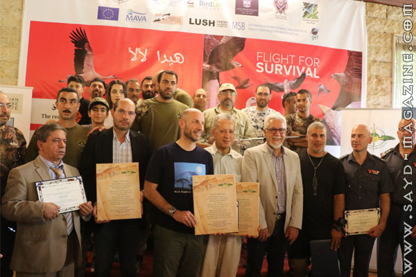
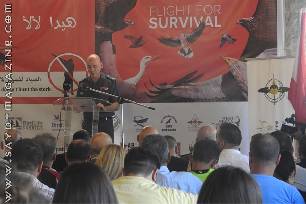
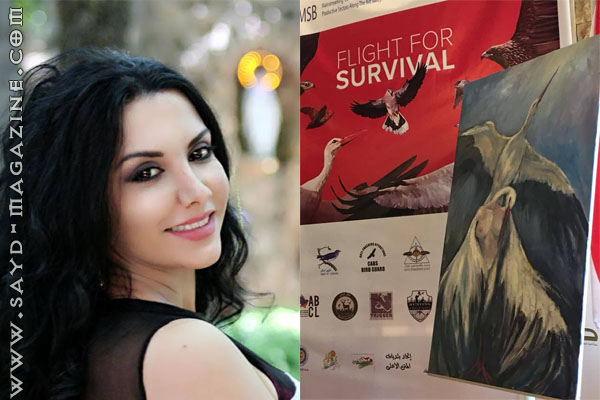
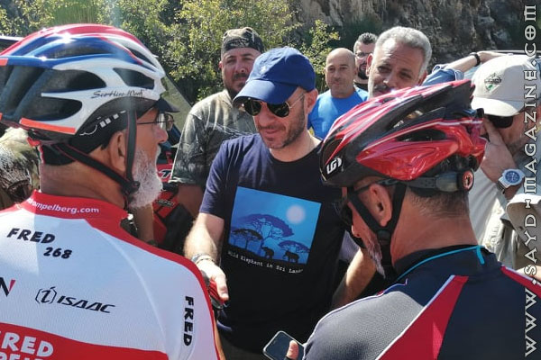
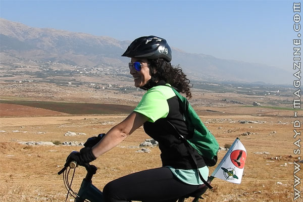
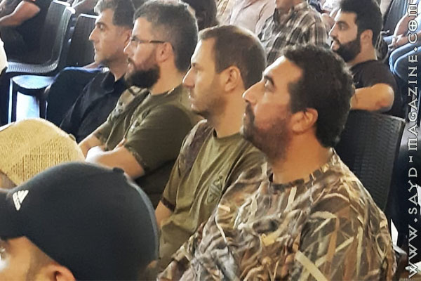
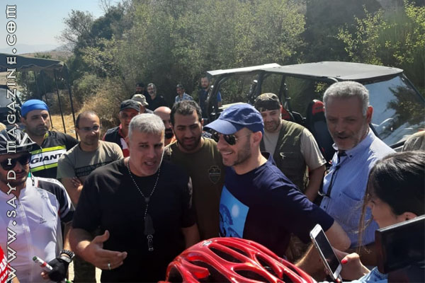
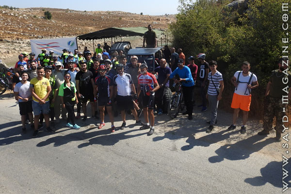
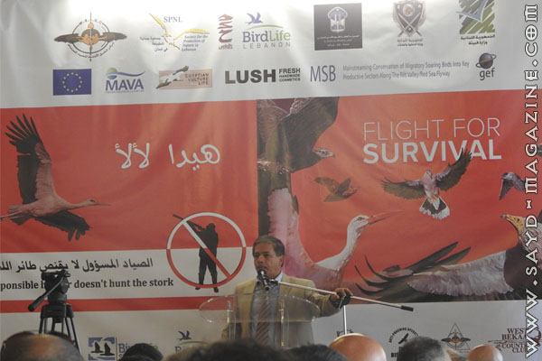
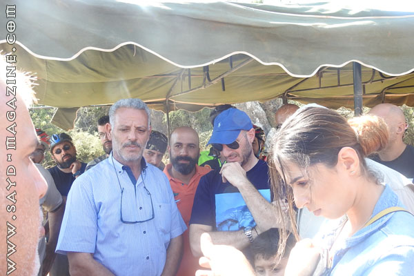
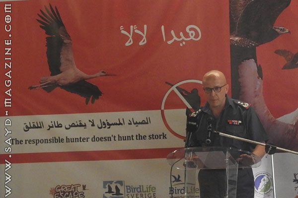
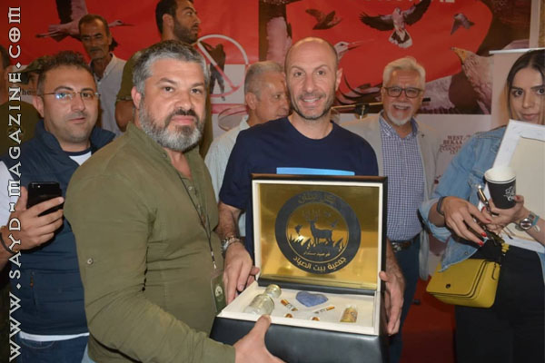
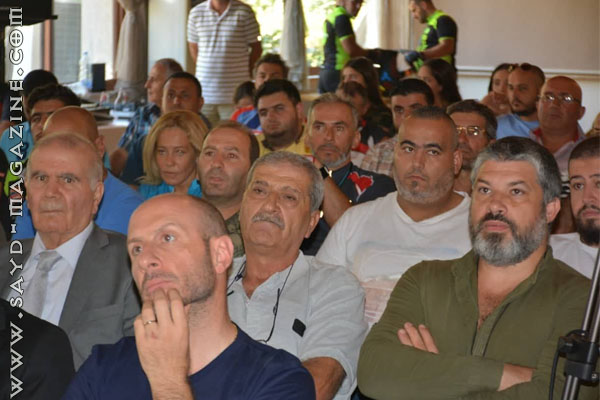
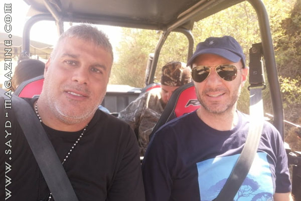
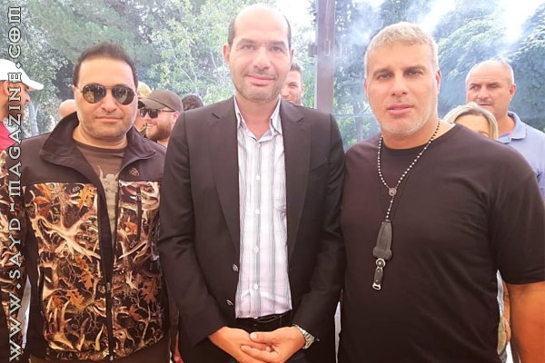
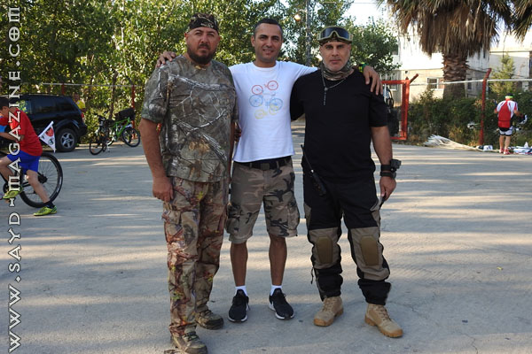
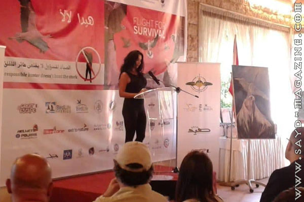
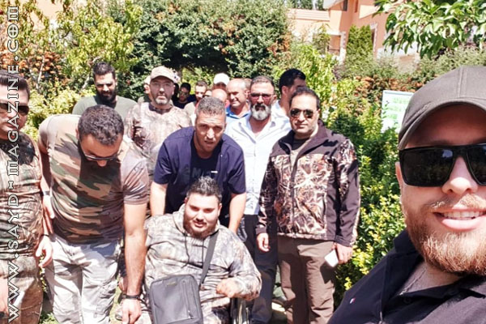
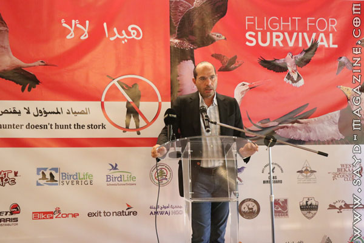
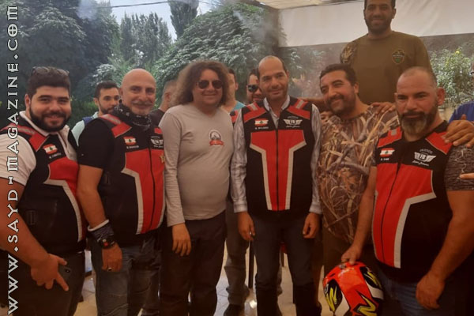
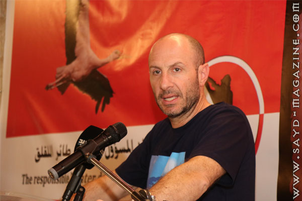
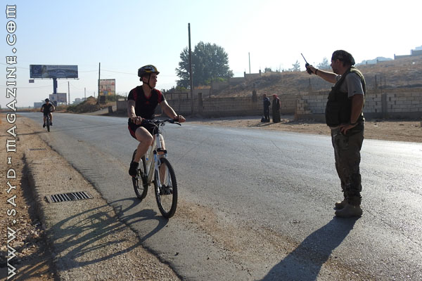
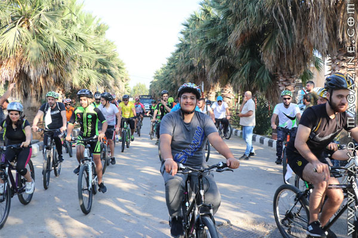
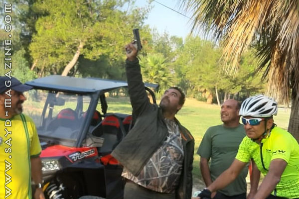
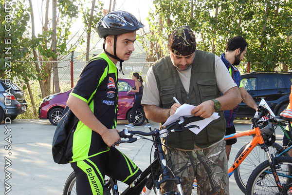
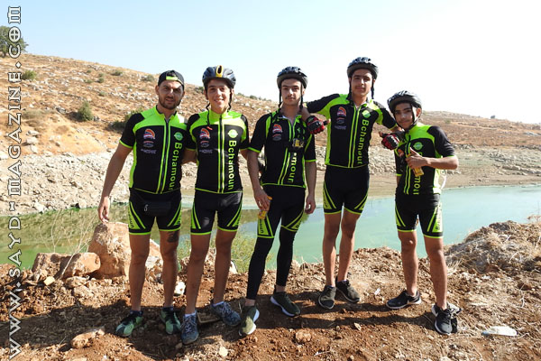
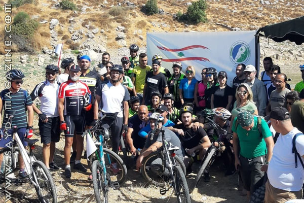
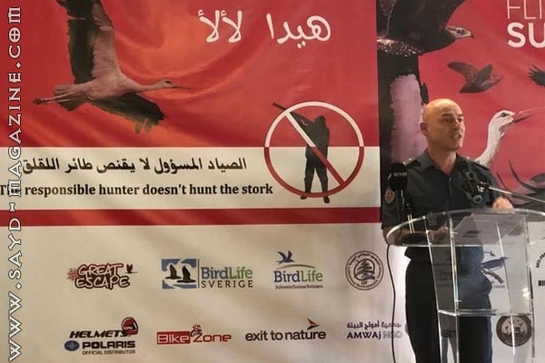
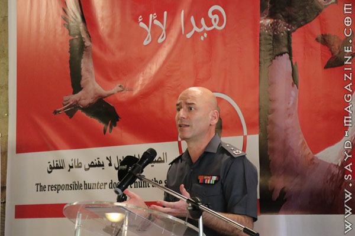
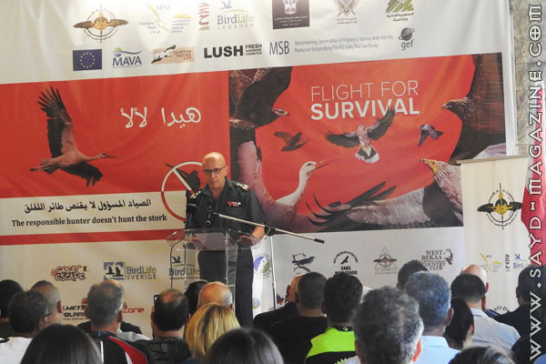
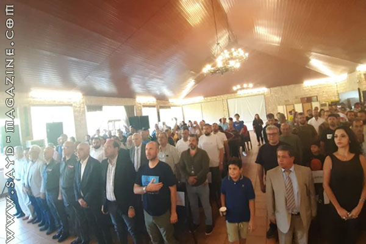
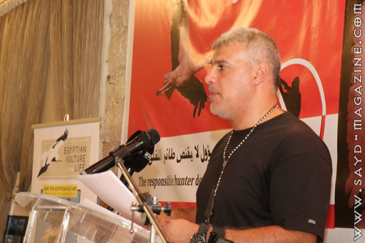